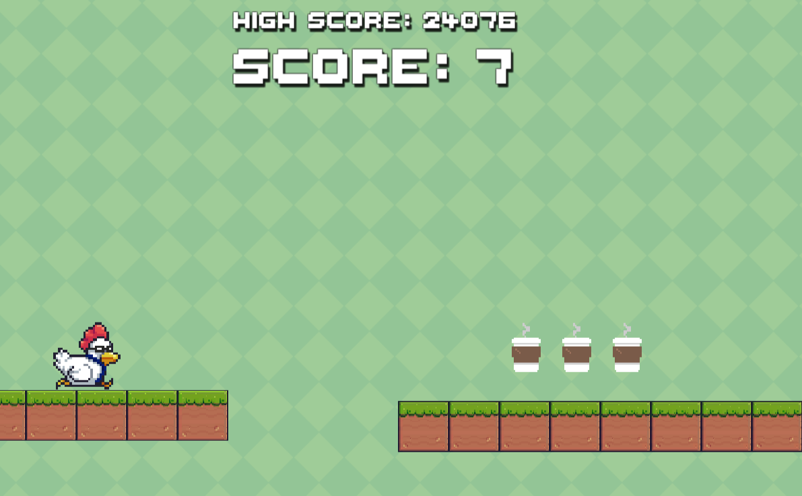

> Project: Bawk To Work
Bawk To Work is a solo project developed in Unity Game Engine. Help the chicken get back to work by collecting coffee, and powerups to increase the score. The player naturally accumulates points over time, but the game will increase in speed the further you get!
This game is an endless runner that incorporates randomly generated platforms, as well as randomly generated points and powerups that the player can collect. This was done by creating a point of reference in tandem with game camera; once objects are off the camera, then objects are disabled to generate new objects for the player. Utilizing the object pool pattern design pattern, I was able to do this. Through this pattern, memory was saved by reusing the platforms, points, and powerups as a pool of initialized objects.
Game design, and programming were all done by me through Unity and C#. Some art was also created by me by using pixel art programs. Most of the art was done by Pixel Frog, with music by Nathan Cleary Music.
You can play the game here!
See Project